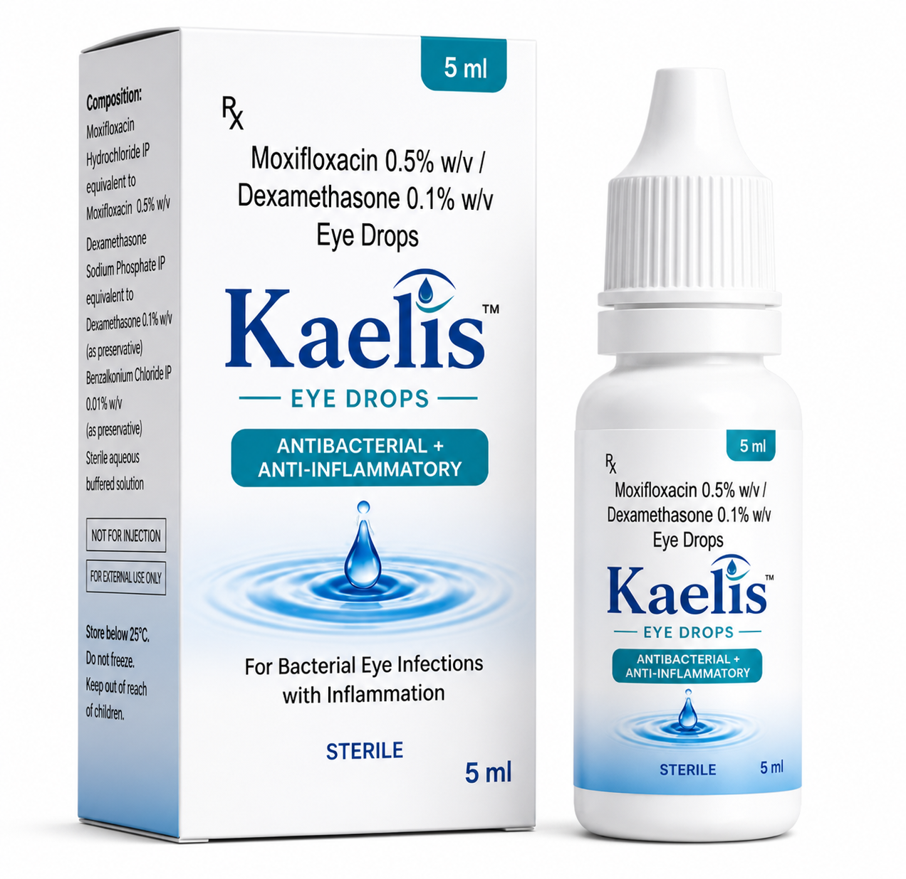
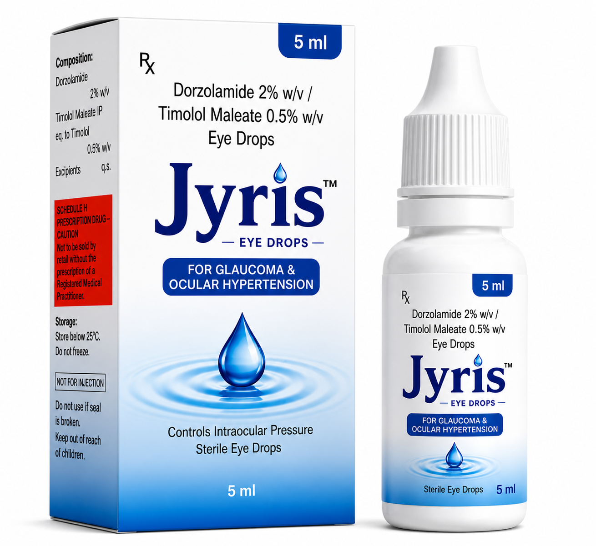
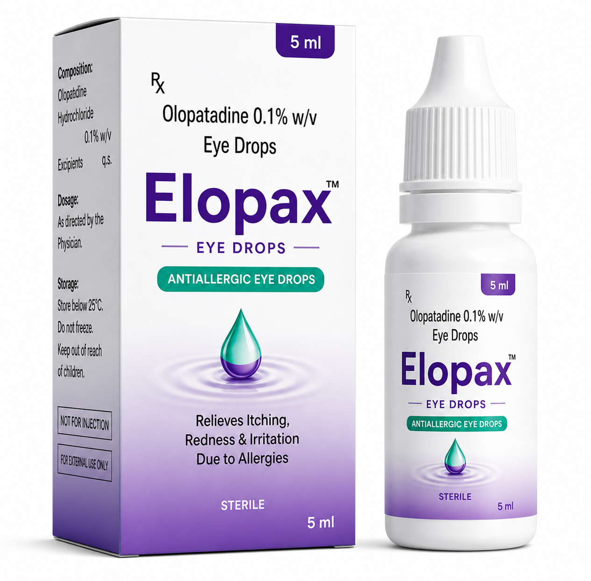

Our Pharmaceutical Portfolio
Advanced ophthalmic formulations engineered for therapeutic excellence

Kaelis™ Eye Drops
Moxifloxacin 0.5% w/v + Dexamethasone 0.1% w/v
Powerful dual-action formula combining a fourth-generation fluoroquinolone antibiotic with a potent corticosteroid for comprehensive treatment of bacterial eye infections with inflammation.
Indications
- Bacterial conjunctivitis (pink eye)
- Blepharitis and blepharoconjunctivitis
- Bacterial keratitis
- Post-operative ocular inflammation prevention
- Meibomian gland dysfunction with infection
Clinical Benefits
Dosage & Administration
Standard dose: Instill 1 drop into affected eye(s) 4-6 times daily. For severe infections, frequency may be increased during initial 48 hours as prescribed by physician.
Duration: Typically 7-10 days. Do not exceed 14 days without medical supervision.
Presentation: Sterile eye drops, 5ml bottle with dropper tip.
Precautions
Contraindicated in viral, fungal, or mycobacterial eye infections. Prolonged use may increase secondary infections. Remove contact lenses before application. Wait 15 minutes before reinserting.

Jyris™ Eye Drops
Dorzolamide 2% w/v + Timolol Maleate 0.5% w/v
First-line therapy for elevated intraocular pressure. Combines a carbonic anhydrase inhibitor with a beta-blocker for synergistic IOP reduction.
Indications
- Open-angle glaucoma
- Ocular hypertension
- Pseudoexfoliative glaucoma
- Adjunctive therapy for refractory glaucoma
- Prevention of optic nerve damage
Clinical Benefits
Dosage & Administration
Standard dose: One drop in affected eye(s) twice daily (morning and evening).
Missed dose: Administer as soon as remembered, skip if near next dose.
Presentation: 5ml sterile solution with preservative for multi-dose use.
Onset of action: IOP reduction begins within 2 hours, maximal at 8 hours.
Precautions
Contraindicated in reactive airway disease, sinus bradycardia, heart block, or sulfonamide allergy. May cause transient blurred vision. Monitor for systemic beta-blockade effects.

Elopax™ Eye Drops
Olopatadine 0.1% w/v
Once-daily relief for allergic conjunctivitis. Dual-action H1 receptor antagonist and mast cell stabilizer for comprehensive allergy management.
Indications
- Seasonal allergic conjunctivitis (hay fever)
- Perennial allergic conjunctivitis
- Vernal keratoconjunctivitis
- Giant papillary conjunctivitis
- Contact lens-related allergy symptoms
Clinical Benefits
Dosage & Administration
Standard dose: One drop in each affected eye once daily.
Severe allergy season: May be used twice daily if needed (12 hours apart).
Presentation: 5ml sterile, preservative-free single-dose or multi-dose container.
Compatible with contact lenses: Wait 10 minutes after insertion.
Precautions
Transient mild stinging may occur upon instillation. Do not use with other ocular medications without 5-minute spacing. Store at controlled room temperature.